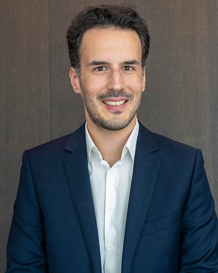

Curriculum vitae
Dr. Angelo Boutalikakis
Operator, product builder, and transformation leader.
Zurich, Switzerland hello@boutalikakis.com linkedin.com/in/angeloboutalikakis Google Scholar github.com/aboutali

1Profile
Angelo Boutalikakis is a strategy, transformation, and product leader based in Zurich. He joined McKinsey & Company in 2017 and works as an Engagement Manager. His work spans insurance, health insurance, healthcare, consumer goods, telecommunications, media, and energy.
Angelo builds software with AI. His current project is an MCP server on Swiss health-insurance and healthcare data. He holds a PhD in strategic management, magna cum laude, from Universität Passau. He published in the Journal of Product Innovation Management and Harvard Business Review.
2Experience
Leads strategy, transformation, and digital engagements. Belongs to the firm's digital business-building practice. Sectors: insurance, health insurance, healthcare, and consumer. Works across Switzerland, Germany, Italy, the UK, the US, India, and Nigeria.
- Swiss multi-line insurer, post-merger IT integration (September 2025 – April 2026). Led the Group IT workstream, unified the operating model and processes of two carriers, and designed the future Group IT function. Advised the Group CTO and six of his executive-committee direct reports. Wrote the proposal that won the work. Result: ~30–40% IT cost synergies identified.
- Global insurer's technology and cybersecurity function (November 2024 – 2025). Led the engagement and its follow-on phases. Designed an Asset Risk Assurance process and its governance from scratch, and built a new catalogue of cybersecurity tests and controls, under regulatory scrutiny with COO-level interaction.
- European multi-line insurer, transformation (2023 – 2024). Workstreams across IT cost, claims management, data and analytics, and agile IT transformation. Result: 30%+ IT cost reduction identified and a plan to cut claims costs by €50m.
- Swiss health-insurance practice (2023 – 2026). Built a CHF ~90bn Swiss healthcare-spend database, split by payor, reimbursement type, and service type, with a Python pipeline and Tableau front end, reused by business-development teams across several Swiss health insurers.
- Swiss health insurer, board level (2025 – 2026). Presented research on the future of Swiss supplementary health insurance to the Board Chairman.
- Multinational medtech, consumer-health product build (2022 – 2023). Led the product workstream end-to-end for a biosensor with an AI-coaching app, from consumer-needs analysis through go-to-market. Analyzed 40,000 consumer data points and led three teams in parallel plus 6+ client team members across the US, Europe, and India. Presented the product vision to the Chairman and CEO of a ~$200bn medical-device company. The product launched in the UK in early 2024 and in the US in September 2024.
- West African beverage bottler, cost and operational resilience (2023 – 2024). Co-led a programme of ~7 parallel workstreams in Lagos, Nigeria, across manufacturing operations, route-to-market, organization, and cost, amid high inflation and currency depreciation.
- Independent ultra-luxury watchmaker, growth strategy (2023). Ran a 4-week growth strategy with 4–5 workstreams, target ~40% growth over five years, working with the CEO and the full leadership team.
- Global insurer, incoming Head of Health onboarding (2023). Designed and delivered an onboarding programme with deep dives on managed care, payor-provider integration, and digital health.
Leave for the PhD, with selected engagements.
- IMD, Center for Future Readiness (2019 – 2022). Built a text-analysis tool that identifies cognitive constructs in companies and executives, and helped promote and scale the newly founded center.
- Premium chocolate manufacturer. Supported an indirect-spend reduction programme.
- Swiss digital attacker telco. Product Owner for the invoicing and self-help journeys. Result: higher NPS, shorter resolution times, fewer complaints, fewer cancellations.
- Swiss retail cooperative, cost (2018). Designed a full cost programme across direct and indirect spend, with scenarios of up to ~40% lower indirect spend and ~10% lower direct spend.
- German media and broadcasting company (2017 – 2018). Ran an end-to-end IT-process diagnostic. Result: ~20% cost reduction for the same output.
- Consumer goods, growth method (2017 – 2019). Co-developed a method to find granular growth pockets by product and geography. Several consumer-goods clients applied it, and senior partners presented it at C-level events in London.
3Other experience
Past affiliation, alongside the McKinsey educational leave.
Investment Banking, Equity Capital Markets, UBS, Zurich (2015). Electric Vehicle Strategy, Volkswagen Group, Beijing (2014). Technology Consulting, Deloitte, London (2013 – 2014).
Advises several early-stage startups in AI and digital health.
4Education
Dissertation: "The Social-Psychological Interface Between Firms and Infomediaries: Essays on the Roles of Framing, Flattery, and Technological Discontinuities."
Grade 5.6 of 6.0, top of class. Thesis: "Explaining the Performance of Index Option Put-Write Strategies."
GPA 4.3, top of class.
5Awards
- Most Inspirational Paper, Behavioral Strategy track, EURAM 2022
- PhD magna cum laude, Universität Passau, 2022
- Top of class, HSG Master in Quantitative Economics and Finance, 2017
- Top of class, Rotman visiting MBA programme, 2016
6Certifications
- Certified Scrum Master (CSM)
- Certified Scrum Product Owner (CSPO)
7Selected publications
See the full list on the Writing page.
8Teaching and speaking
Prof. Dr. Lorenz Graf-Vlachy
- Co-organized a pan-European payor-provider-integration seminar for C-suite attendees (November 2025)
- Moderated a Swiss InsurTech panel, co-hosted by McKinsey and the Swiss InsurTech Hub
- Research presentations at the Academy of Management, EURAM, and INTERSPEECH
9Capabilities
10Languages and interests